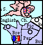

Like a Rubber Ball - Bouncing in DiplomacyMark B. ("Murky") |
|---|

e.g.
France: F Bre-Eng
England: F Lon-Eng
Both moves would bounce as there is a conflict and equal forces are involved.
France: F Bre-Eng (*bounce*)
England: F Lon-Eng (*bounce*)
... the units do not move.
However
France: F Bre-Eng
England: F Lon-Eng
England: F Nth S F Lon-Eng
would ONLY result in the English moving, as it is 2 vs. 1.
France: F Bre-Eng (*bounce*)
England: F Lon-Eng
England: F Nth S F Lon-Eng
If Germany (say) had ordered F Den-Nth then the support would have been cut and the moves to Eng would revert to 1 vs 1 and bounce again!
In the opening moves (for example) both England and France can move to the English channel, and for both powers having the others unit here can be tricky as home SCs need to be defended.
One can diplome so that both F Lon and F Bre can move (more usefully) elsewhere, but one can never quite trust the othey guy to keep his end of the bargain.
Let's have a look at a simplified situation, ignoring all the other possible factors.
| . | English Moves | ||
| F Lon-Eng | Not F Lon-Eng | ||
| French Moves |
F Bre-Eng | (*bounce*) Doesn't get either power anywhere, but at least no damage was done. | Good for France, bad for England |
| Not F Bre-Eng | Good for England, Bad for France | Good for both | |
Here I've assumed that the immediate offensive advantage is desired - it *may* not be good long term to start a declared war from day 1 - but that depends upon other powers and other considerations. I've assumed that you want to do damage from day 1. If this assumption is wrong then you should reduce the benefits of your moving to Eng, but the penalties which apply if the other guy moves to Eng are the same - as is the 'best' combination of moves, the result is now even more counterintuitive!This table will NOT be the complete story, other factors WILL need to be considered.
Imagine you're France.
If Eng does NOT order F Lon-Bre then you have two choices, both are good for you, but one is ALSO bad for england. It's in your interest to play F Bre-Eng.
If England orders F Lon-Eng then you do not want to have ordered Bre elsewhere, the best you can do is to bounce the English by ordering F Bre-Eng.
In either case regardless of what the English do you're better off ordering F Bre-Eng. A similar argument from the point of view of britain shows that F Lon-Eng is the 'best' order for England whatever France does.
However this results in both units staying in one place, and you both not getting your full quota of SCs (e.g. France can only get 2 SCs in the first year, not three). If only you had both behaved irrationally and both not ordered to Eng then you'd both be better off - but this is not a "stable" point on the table! (The above is a form of the "prisoner's dilemma" - a famous example in game theory, it is a simplification as in reality there are many other variables to take into account).
In essence, a limited bounce is where a certain move by either player would be a pain for the other player, and so the players all agree to bounce. It guarantees what the other unit does, as if they do not participate in the bounce then you get the upper hand! As it is done by agreement it is not seen as offensive by the 2 players (but may be seen as such by others, this can be a good thing)
The problem is that at some point you have to trust the other guy and break off - or build up forces to try and break the deadlock (which would probably expose your flank to another power). If you don't end the engagement then at least one unit from each power is forever tied up, butting heads like rams! As William Poundstone says in his book "The Prisoner's Dilemma" - try and avoid prisoner's dilemmas!
The mutual bounce is often seen in the Black Sea (the Russian fleet rarely gets into the med if Turkey is alive), The English Channel, between Venice and Trieste etc. It is also often seen between two powers who wish to feign mutual agression but are really allied.
Consider the following situation:
France:
A Bur
A Spa
Italy:
A Pie
F WMS
Germany:
A Mun
France is aiming to hold on to all her supply centres, and at the same time trying to keep forces in place to avoid a German invasion in the North. France cannot simply use Bur to bounce the Italian unit from Pie, as the Italian might not attack Pie, and this would leave France more open to the German.
What is France to do?
The obvious solution is the self bounce, consider the following move combination:
France:
A Bur-Mar
A Spa-Mar
Italy:
A Pie-Mar
F WMS-Spa(sc)
Germany:
A Mun-Bur
This would result in a bounce in Marseilles between Pie, Bur and Spa. These three units stay still, as a result the German attack on Burgundy bounces, as does the Italian attack on Spain. Even if Italy does not use Pie to attack Marseilles, the French still have Burgundy and Spain protected due to the self bounce.
Seems perfect, yes? Three provinces defended for the price of two? Unfortunately life is never perfect, and the above situation was chosen because there is a way the Italian can get around the French defence. See if you can spot it - it's rather cunning.
Don't cheat, try and spot it!
The answer lays in the support order, that usually helpful, friendly and fluffy order can be used here with malicious results to the supported party.
France:
A Bur-Mar
A Spa-Mar
Italy:
A Pie S FRANCE A Spa-Mar
F WMS-Spa(sc)
Germany:
A Mun-Bur
Cunning, isn't it? This is known as "malicious support" or "unwanted support". By using Pie to support the move from Spain to Marseilles, the Italian has ensured that it happens - this means than the Frenchman leaves Spain unoccupied and it will inevitably fall to the Italian as a result.
However, there was a set of orders which the French could have submitted to avoid this trap...
France:
A Bur H
A Spa H
Unfortunately for France, to benefit from this Italy only had to order A Pie-Mar. We're back to square one - if Italy uses Pie to attack Mar then France should have ordered the mutual bounce! It should be seen that in Diplomacy, there is often no such thing as a "good set of orders". Orders stand and fall in the light of orders from the other players - and as it's a game of inperfect information (one makes ones move without knowledge of what the other guy has done) then we must learn to live with this.
If you ever find yourself in a situation like the one for France and Italy described above, take a deep breath and toss a coin...
Consider the following endgame situation:
England:
F Bal, A Ber
F Fin, F GoB
A Kie, A Mos
A Mun, A Pie
A Pru, A Ruh
A StP
Turkey:
A Boh, A Gal
A Sev, A Sil
A Tyr, A Ukr
A War
England is trying to make inroads into the Turkish line, but there is nothing which can be done to stop Moscow falling to the Turk, (it was deemed unlikely that Warsaw would NOT be involved in an attack upon Moscow, and hence an attack upon Prussia could be discounted). England wants to try and keep Warsaw unoccupied, and it is anticipated that Turkey would like to have units in Warsaw and Silesia rather then Bohemia and Warsaw or Silesia. This means that Turkey will either order
A Gal-War
A Sil S A Gal-War
or
A Sil-War
A Gal-Sil
In order to negate both of these possibilities Silesia and Warsaw would both need to be attacked. If possible they'd be attacked with enough force to provoke a dislodgement, and hence a forced disband. The problem is to create such a set of orders which would not result in a weakening of defences, whether successful or not.
The requirement of a strong attack means that Munich cannot be used for support, it must be the attacking unit (to avoid the cutting of support). Unfortunately this would leave the province of Munich open to attack, as any support to hold would be void. Also, if A Mun-Sil were successful this would leave Munich empty and more open to invasion!
England resolved these conflicting demands by making use of a bounce in Munich, attacking Munich with several friendly units in a bid to ward off hostile units. In the event that the bounce was NOT in equal numbers, and that England was numerically superior then Munich could not be dislodged due to the self dislodgement rule. England also supported the Munich to Silesia move in the hope that Silesia might be dislodged and forced to disband!
Thus a possible set of moves from this situation might be (note we don't actually see a 'self attacking' bounce here):
England:
A Stp S A Mos H
A Mos S A Pru-War (*cut*, *dislodged*, *retreat to Lvn*) We can but hope!
A Pru-War (*bounce*) Prevents War being occupied
A Kie S A Ruh-Mun
A Bur S A Ruh-Mun
A Ruh-Mun Stops anyone taking Munich
A Mun-Sil Prevent Sil supporting A Gal-War
A Ber S A Mun-Sil Try to force a disband
Turkey:
A War-Mos
A Ukr S A War-Mos
A Sev S A War-Mos Grab an SC
A Gal-War (*bounce*) Try to fortify the line... fail
A Sil S A Gal-War (*cut*, *dislodged*, *disbanded NRP*)
A Boh-Mun (*bounce*)
A Tyr S A Boh-Mun Try to grab Munich.
Such a situation would have damaged the Turkish position quite badly, especially as at this stage in the game England only needed to gain one SC to win outright.
We actually saw the following combination:
England:
A Mos S A Pru-War (*cut*, *dislodged*, *retreat to Lvn*)
A Stp S A Mos
F GoB H
F Fin H
F BAL S A Ber-Pru
A Pru War (*bounce*)
A Bur S A Ruh-Mun
A Ruh-Mun (*bounce*)
A Mun-Sil (*bounce*)
A Ber S A Mun-Sil
A Kie S A Ruh-Mun
Turkey:
Turkey: A Trl-Mun (*bounce*)
Turkey: A Boh S A Sil H
Turkey: A Sil H
Turkey: A Gal-War (*bounce*)
Turkey: A War-Mos
Turkey: A Ukr S A War-Mos
Turkey: A Sev S A War-Mos
Thus we see Munich attacked by three of its own side ('friendly fire') and two of the enemies units. The attacking enemy units bounce, and as Munich may not be dislodged by it's own forces the attacking English units also bounce and Munich is secure.
The advantage of this is that the unit in Munich was available to cut supports of enemy units - unlike the case where Munich would be supported to hold.
The situation was that England was on 17 supply centres needing one SC to win. Italy had only Tunis - neither Italy nor Turkey could afford to let England gain Tunis, to do so would mean an instant win for England. Turkey had 16 SCs. The rest of the board was in stalemate.
Italy could not use it's unit to do anything other than hold, as to do so would mean annihilation at the eleventh hour.
Therefore, for many turns we had witnessed the following:
England:
F Wme S F Naf-Tun
F Naf-Tun (*bounce*)
Italy:
F Tun H
Turkey:
F TYS-Tun (*bounce*)
F ION S F TYS-Tun
Even though Tunis was attacked by overwhelming force it survived intact, as the two forces bounced from each other, and Tunis, as a beleagured unit survives.
At this stage it looked like a three way draw was inevitable, but then England failed to attack Tunis, and as this unit was no longer beleagured it was dislodged by the Turk. England gave an SC to it's mortal enemy, as a result the Italian was eliminated and the game ended in a two way stalemate late in the 1920s (as opposed to a three way draw). Diplomacy is not a nice game....

|
Mark B. ("Murky") (murky@lspace.org) |